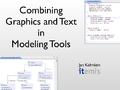
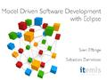
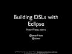

5 Minutes Tutorial |
Webinar: What Is New in Xtext 2.0Sven Efftinge, Sebastian ZarnekowJuly 2011, Eclipse Webinar webinar recordings | |
Webinar: Xtext - Language Development FrameworkSven Efftinge, Jan Köhnlein, Sebastian ZarnekowJune 2010, Eclipse Webinar webinar recordings |
|  | Combining Text and Graphics in Eclipse-based Modeling ToolsJan KöhnleinMarch 2010, EclipseCon slides, blog post |
|  | Model Driven Software Development with EclipseSebastian Zarnekow, Sven EfftingeNovember 2009, Java User Group Hamburg slides |
|  | Building DSLs With EclipsePeter FrieseAugust 2009, Eclipse Day at the GooglePlex in Mountain View, CA slides, video, blog post |